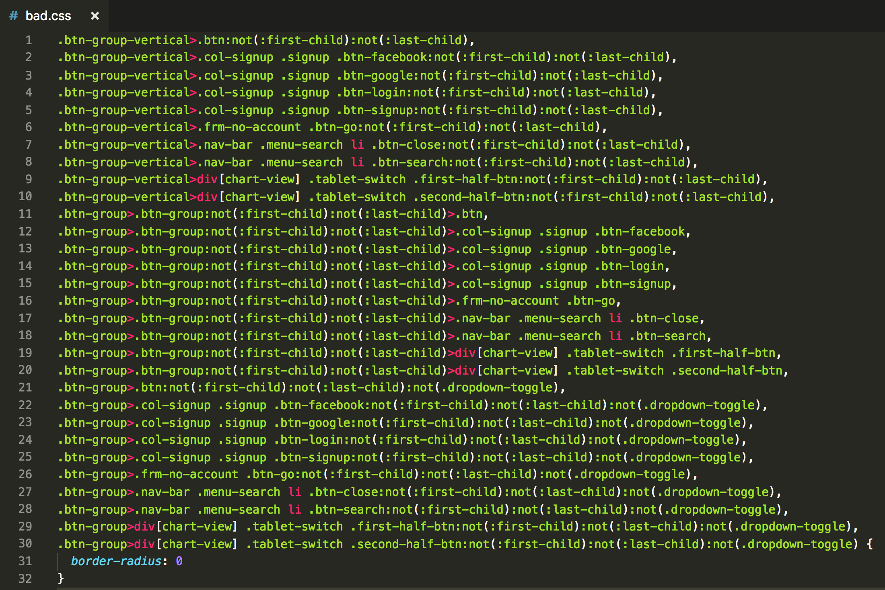

CSS Preprocessors
Tips & tricks
Yevhen Isakov
Agenda
- History
- Three Kingdoms
- Possibilities
- The Good, The Bad & The Ugly
- Nowadays
2006
sass-lang.com, 2006
nav
ul
margin: 0
padding: 0
list-style: none
li
display: inline-block
a
display: block
padding: 6px 12px
text-decoration: none
nav {
ul {
margin: 0;
padding: 0;
list-style: none;
}
li { display: inline-block; }
a {
display: block;
padding: 6px 12px;
text-decoration: none;
}
}lesscss.org, 2009
stylus-lang.com, 2009
CSS had no:
- Variables
- Nesting
- Mixins
- Math
- Color functions
- Loops & conditions
Variables
$font-stack: Helvetica, sans-serif;
$primary-color: #333;
body {
font: 100% $font-stack;
color: $primary-color;
}Mixins
@mixin toolbar-theme {
background-color: hsl(120, 70%, 95%);
border-radius: 4px;
border: 1px solid currentColor;
}
.toolbar {
@include toolbar-theme;
}@mixin border-radius($radius) {
-webkit-border-radius: $radius;
-moz-border-radius: $radius;
-o-border-radius: $radius;
border-radius: $radius;
}Nesting
.block {
margin: 0;
padding: 0;
list-style: none;
&__element {
display: inline-block;
&--modifier {
display: block;
padding: 6px 12px;
text-decoration: none;
}
}
}Math
ul {
width: 120px * 8;
padding-left: 20px / 4;
}Loops
@for $i from 1 to 5 {
.item-#{i} {
left: $item-width * $i;
}
}.loop(@counter) when (@counter > 0) {
.loop((@counter - 1));
.item-@{counter} {
left: @item-width * @counter;
}
}
.loop(5)@import
Tips & tricks
@content
@mixin media-breakpoint-up($name, $breakpoints: $grid-breakpoints) {
$min: breakpoint-min($name, $breakpoints);
@if $min {
@media (min-width: $min) {
@content;
}
} @else {
@content;
}
}
@mixin media-breakpoint-down($name, $breakpoints: $grid-breakpoints) {
$max: breakpoint-max($name, $breakpoints);
@if $max {
@media (max-width: $max) {
@content;
}
} @else {
@content;
}
}Context
.order-summary {
$context: &;
&__row {
&--header {
background: rgba($purple-ultralight, .5);
}
}
&__title {
#{$context}__row--header &,
#{$context}__row--total & {
padding-left: $row-offset-horizontal;
}
}
&__value {
#{$context}__row--header &,
#{$context}__row--total & {
padding-right: $row-offset-horizontal;
}
}
}@at-root
@mixin plus($size: 'small') {
$context: &;
@if ($size == 'small') {
@at-root {
.add-to-cart--expanded {
&#{$context} {
&::before {
transform: $plus-centering-transform-xy rotate(0deg);
}
&::after {
transform: $plus-centering-transform-xy rotate(90deg);
}
}
}
}
}
}@at-root with params
@media print {
.parent {
.child {
@at-root(without: media) {
color: green;
}
}
}
}.parent .child {
color: green;
}map-get()
$favorite: (
common: (
background-color: $gray-dark,
close-icon-color: rgba($white, .2)
),
header: (
background-color: $gray-medium,
color: $white
),
list: (
scrollbar-color: $gray-medium
),
item: (
background-color: $gray-dark,
in-between-separator-color: $gray-medium,
close-icon-color: $red,
title-color: $white,
data: (
header-color: $gray,
color: $white,
currency-sign-color: $gray-extralight
)
)
);
.favorite-header {
background: map-get(map-get($favorite, header), background-color);
}@extend

CSS Nowadays
In 2019 CSS preprocessors can:
- Variables
- Nesting
- Mixins
- Math functions
- Color functions
- Loops & conditions
What does pure CSS can?
CSS Variables
:root {
--font-stack: Helvetica, sans-serif;
--primary-color: #333;
}
body {
font: 100% var(--font-stack);
color: var(--primary-color);
}Nesting
.block {
margin: 0;
padding: 0;
list-style: none;
&__element {
display: inline-block;
&--modifier {
display: block;
padding: 6px 12px;
text-decoration: none;
}
}
}Math
ul {
width: calc(120px * 8);
padding: calc(12px + .5em);
}Mixins
:root {
--toolbar-theme: {
background-color: hsl(120, 70%, 95%);
border-radius: 4px;
border: 1px solid var(--theme-color late);
};
}
.toolbar {
@apply --toolbar-theme;
}PostCSS
postcss.org, 2013
PostCSS
- Vendor prefixes
- Mixins
- Nesting
- Loops
- ...
PostCSS plugins
- Autoprefixer — vendor prefixes
- StyleLint — proofread and validation
- CSSgrace — old browsers
- Preset Env (ex CSSNext) — - future CSS syntax
- CSSNano — - optimization & minification
- PreCSS - Sass-like syntax with all the power
Thank you
Any questions?